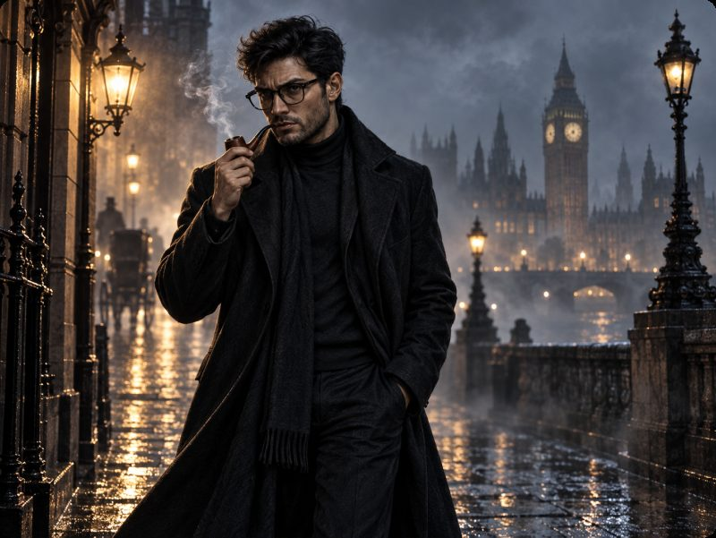

Assessment · Unit 9
Show what you know.
An interactive test based on Unit 9 of Outsiders: comparatives, superlatives, should / shouldn’t for advice, and the castles of Britain. Select an answer for each question, check your results and review explanations.
22 questions · One correct answer each · Unlimited retries · Your most recent result is saved on this device

Unit 9 · Knowledge checkLoading the test…
Need another look at the material?
Study the complete lesson, with read-aloud passages, vocabulary and immediate feedback, before trying the test again.